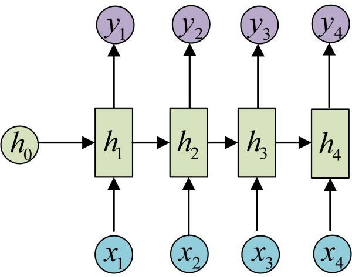

一、RNNCell
Tensorflow 实现RNN的基本单元
- call方法
（output, next_state) = call (input, state)
_files/v2-a5f8bc30bcc2d9eba7470810cb362850_hd.jpg)
input : xi
output : output ?
state : hi
next_state : h(i+1)
每调用一次RNNCell的call方法，就相当于在时间上“推进了一步”，这就是RNNCell的基本功能.
在代码实现上，RNNCell只是一个抽象类，我们用的时候都是用的它的两个子类BasicRNNCell和BasicLSTMCell。顾名思义，前者是RNN的基础类，后者是LSTM的基础类。
- state_size, output_size
前者是隐层的大小， 后者是输出的大小。比如我们通常是将一个batch送入模型计算，设输入数据的形状为（batch_size, input_size )，那么计算时得到的隐层状态就是（batch_size, state_size )，输出就是（batch_size, output_size）。
二、tf.nn.dynamic_rnn 一次执行多步
基础的RNNCell有一个很明显的问题：对于单个的RNNCell，我们使用它的call函数进行运算时，只是在序列时间上前进了一步。比如使用x1、h0得到h1，通过x2、h1得到h2等。这样的h话，如果我们的序列长度为10，就要调用10次call函数，比较麻烦。对此，TensorFlow提供了一个tf.nn.dynamic_rnn函数，使用该函数就相当于调用了n次call函数。即通过{h0,x1, x2, …., xn}直接得{h1,h2…,hn}。
具体来说，设我们输入数据的格式为(batch_size, time_steps, input_size)，其中time_steps表示序列本身的长度，如在Char RNN中，长度为10的句子对应的time_steps就等于10。最后的input_size就表示输入数据单个序列单个时间维度上固有的长度。另外我们已经定义好了一个RNNCell，调用该RNNCell的call函数time_steps次，对应的代码就是：# inputs: shape = (batch_size, time_steps, input_size)# cell: RNNCell# initial_state: shape = (batch_size, cell.state_size)。初始状态。一般可以取零矩阵outputs, state = tf.nn.dynamic_rnn(cell, inputs, initial_state=initial_state)此时，得到的outputs就是time_steps步里所有的输出。它的形状为（batch_size, time_steps, cell.output_size)。state是最后一步的隐状态，它的形状为（batch_size, cell.state_size)。
三、如何堆叠RNNCell : MultiRNNCell
很多时候，单层RNN的能力有限，我们需要多层的RNN。将x输入第一层RNN的后得到隐层状态h，这个隐层状态就相当于第二层RNN的输入，第二层RNN的隐层状态又相当于第三层RNN的输入，以此类推。在TensorFlow中，可以使用tf.nn.rnn_cell.MultiRNNCell函数对RNNCell进行堆叠，相应的示例程序如下：
import tensorflow as tf
import numpy as np
# 每调用一次这个函数就返回一个BasicRNNCell
def get_a_cell():
return tf.nn.rnn_cell.BasicRNNCell(num_units=128)
# 用tf.nn.rnn_cell MultiRNNCell创建3层RNN
cell = tf.nn.rnn_cell.MultiRNNCell([get_a_cell() for _ in range(3)]) # 3 ceng RNN
# 得到的cell实际也是RNNCell的子类
# 它的state_size是(128, 128, 128)
# (128, 128, 128)并不是128x128x128的意思
# 而是表示共有3个隐层状态，每个隐层状态的大小为128
print(cell.state_size)
# 使用对应的call函数
inputs = tf.placeholder(np.float32, shape=(32, 100)) # 32 是 batch_size
h0 = cell.zero_state(32, np.float32) # 通过zero_state得到一个全0的初始状态
output, h1 = cell.call(inputs, h0)
print(h1) # tuple中含有3个32x128的向量
Output 说明

def call(self, inputs, state):
"""Most basic RNN: output = new_state = act(W * input + U * state + B)."""
output = self._activation(_linear([inputs, state], self._num_units, True))
return output, output
这句“return output, output”说明在BasicRNNCell中，output其实和隐状态的值是一样的。因此，我们还需要额外对输出定义新的变换，才能得到图中真正的输出y。由于output和隐状态是一回事，所以在BasicRNNCell中，state_size永远等于output_size。TensorFlow是出于尽量精简的目的来定义BasicRNNCell的，所以省略了输出参数，我们这里一定要弄清楚它和图中原始RNN定义的联系与区别。